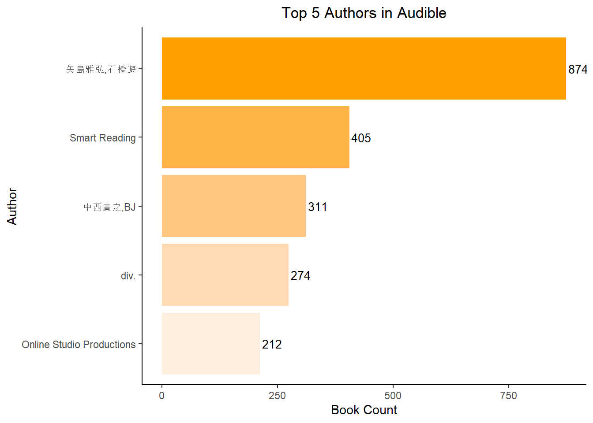

Data Cleaning is the process of identifying and correcting or removing errors, inaccuracies, and inconsistencies and overall appropriating the data to improve the quality of the data, thereby making it more suitable for analysis. It is a crucial step in the data analysis process as the quality of data directly impacts the validity of the results. It can involve but not limited to:
Handling Missing Values
Removing Duplicates
Data Type Conversion
Outlier Detection
Error Correction
The Audible dataset is a collection of data related to audiobooks gathered from Audible. It contains data from authors of audiobooks to release dates. The data represents the important details of audiobooks from 1998 till 2025 (pre-planned releases) and it was obtained from Kaggle. A peek into the Audible dataset indicates that there are some errors and inconsistencies which can be corrected using string manipulation techniques along side other data cleaning techniques.
Libraries Used
The tidyverse library is a collection of R packages that can be used in Data Analysis. Some of the packages to be used are the readr for data import, dplyr for data wrangling, stringr for string manipulation to mention a few. Since these packages are housed in the tidyverse. I call this library since it is already installed.
#load librarieslibrary(knitr)library(tidyverse)
── Attaching core tidyverse packages ──────────────────────── tidyverse 2.0.0 ──
✔ dplyr 1.1.4 ✔ readr 2.1.5
✔ forcats 1.0.0 ✔ stringr 1.5.1
✔ ggplot2 3.5.1 ✔ tibble 3.2.0
✔ lubridate 1.9.2 ✔ tidyr 1.3.1
✔ purrr 1.0.1
── Conflicts ────────────────────────────────────────── tidyverse_conflicts() ──
✖ dplyr::filter() masks stats::filter()
✖ dplyr::lag() masks stats::lag()
ℹ Use the conflicted package (<http://conflicted.r-lib.org/>) to force all conflicts to become errors
The Audible dataset is a csv file from Kaggle and in order to deep dive into the data I proceeded to import it into RStudio, the IDE for the R Programming Language.
#read in audible csv audible<-read_csv("C:/Users/SAMMY/Desktop/Audible/audible_uncleaned.csv")
Rows: 87489 Columns: 8
── Column specification ────────────────────────────────────────────────────────
Delimiter: ","
chr (8): name, author, narrator, time, releasedate, language, stars, price
ℹ Use `spec()` to retrieve the full column specification for this data.
ℹ Specify the column types or set `show_col_types = FALSE` to quiet this message.
A peek into the dataset just to get familiar with what the data is about :
#examine dataset kable(head(audible,10))
name
author
narrator
time
releasedate
language
stars
price
Geronimo Stilton #11 & #12
Writtenby:GeronimoStilton
Narratedby:BillLobely
2 hrs and 20 mins
04-08-08
English
5 out of 5 stars34 ratings
468.00
The Burning Maze
Writtenby:RickRiordan
Narratedby:RobbieDaymond
13 hrs and 8 mins
01-05-18
English
4.5 out of 5 stars41 ratings
820.00
The Deep End
Writtenby:JeffKinney
Narratedby:DanRussell
2 hrs and 3 mins
06-11-20
English
4.5 out of 5 stars38 ratings
410.00
Daughter of the Deep
Writtenby:RickRiordan
Narratedby:SoneelaNankani
11 hrs and 16 mins
05-10-21
English
4.5 out of 5 stars12 ratings
615.00
The Lightning Thief: Percy Jackson, Book 1
Writtenby:RickRiordan
Narratedby:JesseBernstein
10 hrs
13-01-10
English
4.5 out of 5 stars181 ratings
820.00
The Hunger Games: Special Edition
Writtenby:SuzanneCollins
Narratedby:TatianaMaslany
10 hrs and 35 mins
30-10-18
English
5 out of 5 stars72 ratings
656.00
Quest for the Diamond Sword
Writtenby:WinterMorgan
Narratedby:LukeDaniels
2 hrs and 23 mins
25-11-14
English
5 out of 5 stars11 ratings
233.00
The Dark Prophecy
Writtenby:RickRiordan
Narratedby:RobbieDaymond
12 hrs and 32 mins
02-05-17
English
5 out of 5 stars50 ratings
820.00
Merlin Mission Collection
Writtenby:MaryPopeOsborne
Narratedby:MaryPopeOsborne
10 hrs and 56 mins
02-05-17
English
5 out of 5 stars5 ratings
1,256.00
The Tyrant’s Tomb
Writtenby:RickRiordan
Narratedby:RobbieDaymond
13 hrs and 22 mins
24-09-19
English
5 out of 5 stars58 ratings
820.00
Data Cleaning
Author and Narrator Columns
The Author and Narrator columns contain the names of the Authors and Narrators of the Audiobooks.
#select Author and Narrator columnsaudible %>%select(author,narrator) %>%head(10) %>%kable()
author
narrator
Writtenby:GeronimoStilton
Narratedby:BillLobely
Writtenby:RickRiordan
Narratedby:RobbieDaymond
Writtenby:JeffKinney
Narratedby:DanRussell
Writtenby:RickRiordan
Narratedby:SoneelaNankani
Writtenby:RickRiordan
Narratedby:JesseBernstein
Writtenby:SuzanneCollins
Narratedby:TatianaMaslany
Writtenby:WinterMorgan
Narratedby:LukeDaniels
Writtenby:RickRiordan
Narratedby:RobbieDaymond
Writtenby:MaryPopeOsborne
Narratedby:MaryPopeOsborne
Writtenby:RickRiordan
Narratedby:RobbieDaymond
These columns in the dataset have a common issue known as string concatenation errors. This occurs when two or more strings are joined together without appropriate spacing or delimiters. In this case, the names of authors and narrators are concatenated without spaces, making it difficult to distinguish between first and last names.
Additionally, the strings ‘Writtenby:’ and ‘Narratedby:’ are concatenated with the names, adding unnecessary clutter to our data; hence the need to remove unnecessary strings and add spaces between the names using regular expressions.
#author and narrator column cleaned of unwanted characters and spaces added where necessaryaudible<-audible %>%mutate_at(vars(author,narrator),~if_else(str_detect(.,"(Writtenby:)|(Narratedby:)"),str_replace_all(str_remove(.,"(Writtenby:)|(Narratedby:)|\\d+"),"(?<=[a-z])(?=[A-Z])", " "), .) )
cross-check
It becomes important to check the content of these columns after performing the operation
The Time column is the total duration of each audiobook
audible %>%select(time) %>%head(5) %>%kable()
time
2 hrs and 20 mins
13 hrs and 8 mins
2 hrs and 3 mins
11 hrs and 16 mins
10 hrs
It is a column of string datatype and the contents are needed to be extracted and typecasted to numeric values to aid further analysis.
# Create new columns off the time column and typecast to numeric audible <- audible %>%mutate(# Extract hours and minutes into separate columnshours =as.numeric(str_extract(time, "\\d+(?=\\s*hr)")),minutes =as.numeric(str_extract(time, "\\d+(?=\\s*min)")),# Convert time to secondstime_seconds =case_when(str_detect(time, "hrs|hr") &!str_detect(time, "mins|min") ~as.numeric(str_extract(time, "\\d+(?=\\s*hr)")) *3600,str_detect(time, "hrs|hr") &str_detect(time, "min|mins") ~as.numeric(str_extract(time, "\\d+(?=\\s*hr)")) *3600+as.numeric(str_extract(time, "\\d+(?=\\s*min)")) *60,str_detect(time, "mins|min") ~as.numeric(str_extract(time, "\\d+")) *60,TRUE~as.numeric(time) ) )
Warning: There was 1 warning in `mutate()`.
ℹ In argument: `time_seconds = case_when(...)`.
Caused by warning:
! NAs introduced by coercion
NA values
The NA values are introduced because there are some observations that may not have either hours or minutes. In such instances, since there is no hour or minute to extract as the case may be, the newly created ‘hours’ or ‘minutes’ columns return NA. This is a common occurrence in data processing when the expected data is not present in certain observations. And to handle such instances, NA values are replaced with zero
# Handle NA values (if there are cases like "2 hours" with no mins or "45 mins" with no hours)audible$hours[is.na(audible$hours)] <-0audible$minutes[is.na(audible$minutes)] <-0
It is of string datatype, hence the need to convert to Date in its truest form.
#converted releasedate column of data type string to date as should beaudible$releasedate<-as.Date(audible$releasedate,format="%d-%m-%y")#Extract the Year COlumn from the releasedate Columnaudible<-audible %>%mutate(Year=year(audible$releasedate))
The Stars Column represents the average rating given by users for a particular audiobook. It has a band of 1 to 5. But during scraping of the data, the rating was scraped into the same column as the stars bringing about a string concatenation error. There should be a separate rating column that represents the number of users who have rated the audiobook.
audible %>%select(stars) %>%head(6)
# A tibble: 6 × 1
stars
<chr>
1 5 out of 5 stars34 ratings
2 4.5 out of 5 stars41 ratings
3 4.5 out of 5 stars38 ratings
4 4.5 out of 5 stars12 ratings
5 4.5 out of 5 stars181 ratings
6 5 out of 5 stars72 ratings
#split stars column into Stars and Rating Column,remove unwanted characters and convert columns to numeric audible <- audible %>%separate(stars, into =c("Stars", "Rating"), sep ="out of 5 stars") %>%mutate(Stars =as.numeric(str_remove_all(Stars, " ")),Rating =as.numeric(str_remove_all(Rating, ",|ratings")) ) %>%mutate_at(vars(Stars, Rating),~if_else(is.na(.), 0, .) )
# Bar plot of top 5 Audible Authorsggplot(top_authors, aes(x =reorder(author, n), y = n, fill = author)) +geom_bar(stat ="identity") +geom_text(aes(label = n), hjust =-0.1, color ="black", size =3.5) +scale_fill_manual(values =c("矢島雅弘,石橋遊"="#FFA000","Smart Reading"="#FFB347","中西貴之,BJ"="#FFC680","div."="#FFDAB3","Online Studio Productions"="#FFEFE0")) +coord_flip() +labs(x ="Author", y ="Book Count", title ="Top 5 Authors in Audible") +theme_classic() +theme(legend.position ="none",plot.title =element_text(hjust =0.5))

Distribution of Star Rating
star_summary <- audible %>%group_by(Stars) %>%summarise(count =n()) %>%arrange(desc(Stars))# Create the bar plotggplot(star_summary, aes(x =reorder(Stars,Stars), y = count)) +geom_bar(stat ="identity", fill ="#FFA000", color ="#000000") +geom_text(aes(label = count), vjust =-.5,hjust=0.5, color="black", size =3.5)+labs(x ="Star Rating", y ="Count", title ="Distribution of Star Ratings") +theme_classic() +theme(plot.title =element_text(hjust =0.5))
Heatmap of Books Released By Year
unique_years <-unique(audible$Year)year_summary <- audible %>%group_by(Year) %>%summarise(count =n()) %>%arrange(Year)# Create heatmapggplot(year_summary, aes(x ="", y = Year, fill = count)) +geom_tile(color ="white") +scale_fill_gradient(low ="linen", high ="#FFA000") +geom_text(aes(label = count), vjust =0.5, hjust =1,color ="black", size =2.8,alpha=1)+scale_y_continuous(breaks = unique_years)+labs(x ="Book Count", y ="Year", title ="Heatmap of Books Released Each Year") +theme_classic() +theme(plot.title =element_text(hjust =0.5))
In conclusion, the Audible dataset provides a rich source of information for understanding trends in audiobook releases over the years. The dataset, once cleaned and appropriately processed, offers valuable insights into the distribution and frequency of book releases per year.
The process of extracting the release year from the dates, summarizing the data by year, and visualizing the results in a heatmap, has allowed to effectively explore and understand the temporal patterns in the data.
However, it’s important to note that this is just the beginning. The dataset likely contains many more insights waiting to be discovered. Further analysis could involve exploring other variables in the dataset, examining the relationships between variables.
Overall, the Audible dataset serves as a powerful tool for data-driven decision making in the audiobook industry, and its value is only enhanced through careful data cleaning and analysis. 📚🔍